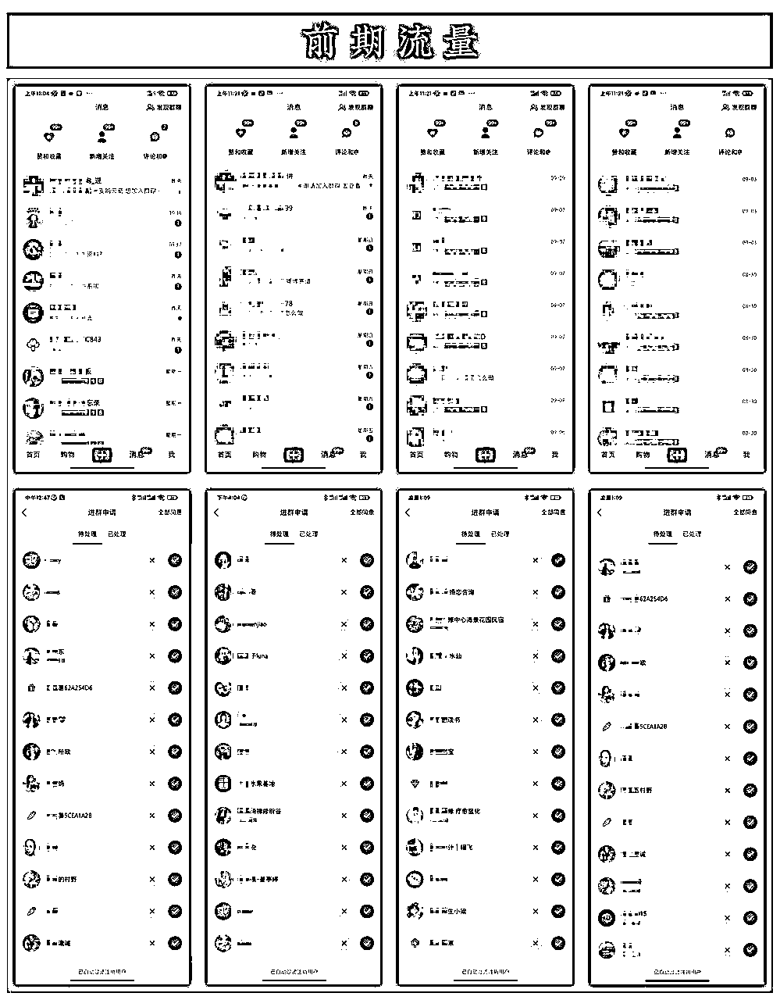
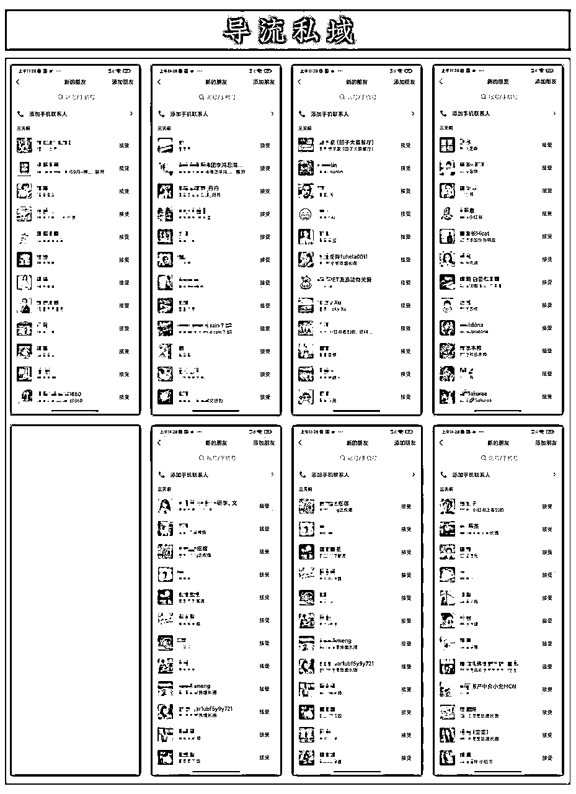
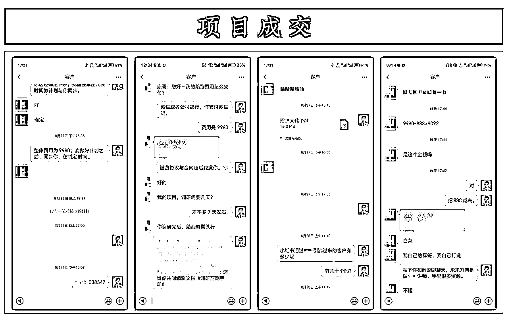
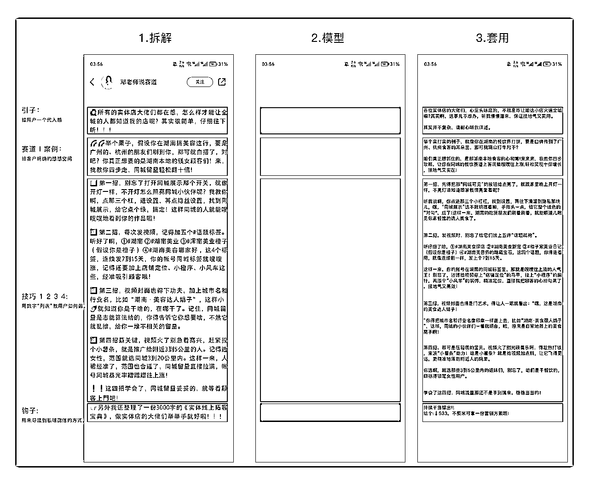
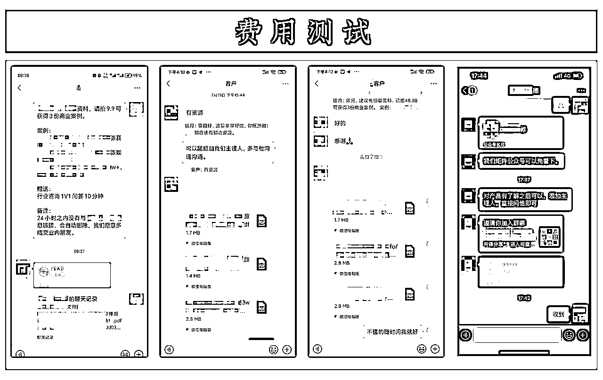
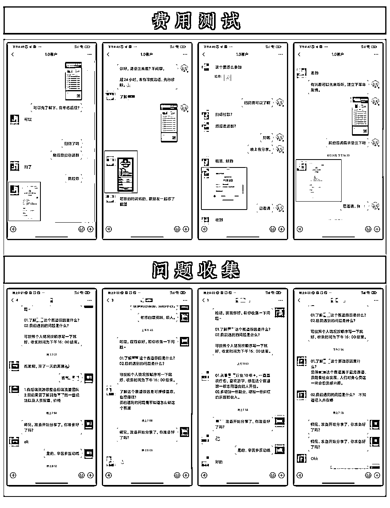
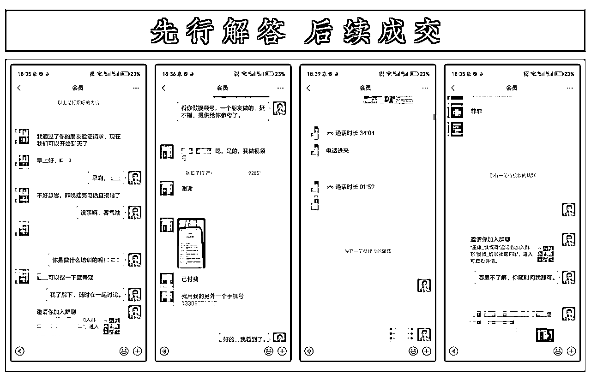
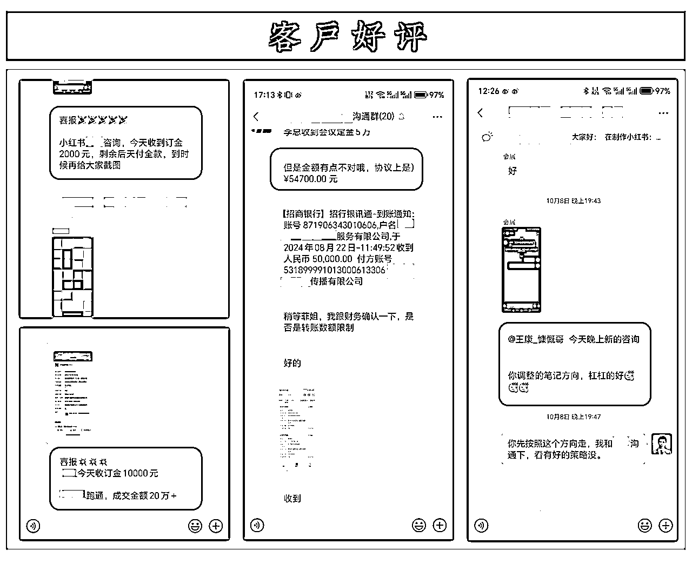

来源：https://b3k2jeijqy.feishu.cn/docx/UdGadee1Wo2wt8x1vWncdzLhnab
1.自我 I 介绍
哈喽大家好、我是拾月，之前分享过几篇复盘，兄弟们给的反响还是不错的，于是最近有些时间写个复盘、接下来，我将与大家分享我是如何“从零开始进行项目冷启动，并最终实现企业级项目孵化“的经历。
由于我自己也经营着一些业务产品，所以开展项目孵化不仅能够锦上添花，还能为我的团队探索更多盈利方式。
2.项目 I 介绍
由于业务发展重要性，我发现单独依靠我们团队几个人，想快速的发展市场与长久生存其实挺难的，于是我在想是否可以把我们“沉淀”下来的经验，通过项目孵化的形式输出给其他人，和大家一起挣钱，毕竟共赢才是长久之计，但是应该怎么做，这是存在很多的问题，如何做、是否配做、是否有客户买单等问题。
道理千千万，但如何做呢、资料课程等一些辅助资料都是非常多的，当然这些东西都只有参考意义，如果一味照抄，很多时候会适得其反，还是需要带有一点原创思维，这样才有灵魂、于是我大概画了一个路径、走到哪里遇到什么问题我在根据解决什么问题。
大致方向 → 案例分享。趋势分享 → 社区转化 → 陪跑转化 → 项目联创，当然这里面还有很多细节，内文里面我会详细介绍，但是最终结果还是好的，都是按照自己设计的路径一步一步的完成，并且也拿出对自己满意不错的业绩。（注：这里的满意不以挣多少钱为标准，而是按照计划的流程与结果为标准）
以下是关于整个案例复盘数据验证， 以供参考...



1.流量网感
关于公域流量，我个人观点是、从一开始就是准确描述清楚你的变现形式与用户引导路径，有了明确指向肯定还会迷茫与恐慌，那就是设计出几种形式话术来测试一下最适合用户的话术行为作为长期使用。
以上我们有了明确的变现路径指向，剩余就是搞流量问题，这个属于细节问题，我个人呢、属于比较懒的人，那么肯定就不能玩转所有平台。
我从一开始就选择了小红书，那么现在依然如此，有句话怎么说“取之于民，用之于民”大概就是这个意思，专注一个平台做好之后，完全可以养活一个团队，这一点是有足够的信心。
2.寻找选题
内容呈现我们该如何选题，其实一开始都是不知道的、同样从开始我给自己设置了一个时间周期，那就是 21 天，在这个时间范围之内 “我就不可能去深度种草然后靠时间来换取流量” 下面分享下我操作方式。
不是同赛道都可借鉴，于是我找了几个“关于养生、旅游、疗愈赛道”做知识付费不错的账号，选择出了几个不错且简单粗暴的选题，直接拆解套用即可，非常的实用。
3.拆解框架
封面拆解其实很简单，用一句话总结（上下左右替换，大小文字属性替换）。
逻辑顺序为 → 确定封面 → 提取框架 → 替换素材+内容。经过这 3 个方式下来基本就采取完成了封面的借鉴使用。（注：具体操作细节这里我不表达了，社群里面大家搜索都将会有，其他大佬写的很详细）。
4.内容借鉴
因为前期我们对很多东西与流量不是非常清楚，所以在前期时候追求的是“效率”，后续可以慢慢优化即可，于是我平时也关注收藏很多同行业做到的不错的博主，直接拿过来拆解出来做即可，边做边优化。

4.等候流量
在引流方面我采用了 2 个小技巧，分别为群聊、私信，截止到目前为止还算是不错的，这两种方式的细节就不展示了，在生财里面很多大佬都有分享技能层面东西，技能我就嫌丑了，接下大家等候时间就好。
1.干货（我的观点）
以上是把流量问题解决了， 下面就顺其自然解决客户转化问题， 针对如何转化其实按照我以往的经验来谈。
首要问题是要把陌生人到熟人“信任”突破，而不是要客户一开始就支付多少钱，于是整个操作是以下这个样子，通过付费筛选精准人群 → 做收费分享与客户建立信任链接 → 收取咨询费 → 项目孵化 → 合作联创、这就是我们目前的商业模式，下面分享内容核心流程。
2.一转（筛选人群）
一开始公域用户都是通过领取案例来的，所以在筛选转化层级上要设置为收费模式、大部分同行都是不收取费用，那么我收费就是属于差异化，为什么敢于收费“我们写案例付出大量时间”，收费是里所应当，至于用户是否买单，那是后话、前期是敢于收费。
收费多少一开始我是不知道的，直接测试就好、先设置 3 个价格 19.9、48.88、99 测试就好，最终结果给出 3 种价格都有人买单，那么买单人数最多的就是 48.88，直接把价格定在这个位置就好，那么这个环节就算结束。（注：记录太多，不整体展示了，影响逻辑表达。)

3.二转（内容分享）19.9
有了一转之后精准用户人群也筛选的差不多，剩余就需要通过案例趋势变现分享，于是还需要继续筛选人群做二次分享。
同样既然准备 PPT 付出了大量的时间、那也一定要收费、价格不要高，19.99 即可，价格设置高了，大部分人接受不了，举个例子如果你设置价格为 199，那么客户就是把预期放的特别高，这样对我来说也是一种压力，我不想又这么大的压力。
价格设置的低一点，为后续成交高的客单价做准备，19.99 是 80%的客户都可以接受，当然最终结果也是可以的。
在开始分享前期我们需要做 2 个准备，提前“收集问题”，提前给出“解决问题方案”，这样在分享时候不至于特别拖堂，让人显着你不专业。

4.三转（收咨询费）365
分享的目的是为了多次转化，为什么我这里说收取的是咨询费，而不是社区会员费，首先大部分客户都是有自己主页的，关注你这里就是为了解下行业趋势，所以技能什么的对他们压根没有任何吸引力，一年的咨询服务周期，对我来说也是不需要做出太大的运营时间，没啥大的压力，压力太大人思想会变形，也是我不喜欢看到的。
当天晚上群里差不多分享人数有 50 人，在分享完成之咨询转化 20%，咨询转化的费用为 365/人，总体来说还是不错的。
当天晚上只转化 3 人，按照当前晚上来说、其实是转化不是很高的，但是这个该如何解决。在分享完成之后我采取 1V1 电话连线，和客户沟通下目前所遇到的问题点，于是第二天转化成交 7 单。结果最终 50 人转化 10 人。

5.四转（项目孵化）9980
经过三转基础 1V1 沟通之后，很多客户是有很多刚性需求的，后期根据问题的描述来承接项目陪跑服务即可。
这个转化期间不可能在几天可以解决，因为客户需要了解你的能力，是否可以解决与他们的问题，在经过 30-50 天的频繁触达，迎来我的项目孵化陪跑 1.0 版本。
在对应的陪跑产品当中，我没有设置一个明确的陪跑方案，原因是不想这么早把产品固定化，目前是以“定制化”成交陪跑服务，在成交客户里面有“旅游公司，团建公司”，疗愈公司，团购工作室”等，目前来看我们陪跑方向在 2.0 版本升级时候已经会越来越明确。以上是关于我如何做培训服务 0-1 起盘全部流程
这里是我个人的一些经验思考，由于时间的推移也获得的一些方法论与思维层面的技巧和做事方式，针对个人而言，确实少走的非常多的弯路，以下描述不以指导为方向、我们以阐述事实为指向。
01.明确目标：
从一开始我就给自己画了一个路径地图，从流量到最终产品转化，虽然细节上也许很多都做的不是很好，在足够大的流量上这些都不是很重要，足以弥补这个路径环节的所有细节缺点，等以上完整路径都解决掉之后，在反过来“单点突破就好”，前期目标清晰非常重要。
02.敢于谈钱：
我见过太多一上来就是领取资料，有同行、有白嫖党，有真实的客户，其实后者是我们需要的，那么该如何筛选这类客户，那我觉得收费是最合理的，收费有很多好处，价值重复售卖，和客户建立深度链接等，另外一个最大的好处就是通过收费来“验证”，你的方向是否正确。
03.坦诚对待：
为什么说有些人在产品“转化”上，有非常多区别，我个人觉得除去营销层面与套路技巧层面，这些都是外在的东西，核心内在的层面就是“坦诚”； 这一点我一直在向“小马宋”老师学习，于是我也用在我自己身上，给用户解决问题的时候也要专业的层面表露出坦诚。
04.提供价值：
现在这个社会太多人把自己包装成大佬了，包装不是坏事“过度包装”这个就会出问题，之前很多人添加我，一上来就叫什么“大佬”，这个名称极度不适应，于是我把网络名称修改为“真实名称”，除业务需要，这样的好处是，我可以坦然给客户提供价值。
很多人问我视觉与思维方面的东西，一般只要我有时间且占用时间不大的情况下，都会手把手帮忙解决，多和客户接触在给他提供价值的基础上其实也是“利己”。
05.核心技能：
这个点非常重要，这里表达一下及时你计划做的有多少的好，基础流量问题解决不掉，其他都是白谈，我就锻炼了几个技能，商业思维逻辑，产品构成的逻辑，最重要的一个点，我可以通过个人能力把流量来解决掉，这样在核心问题就不用依靠他人，别人给你导流也好，白给你流量也好，后者都是锦上添花...
重点核心技能：流量、流量、流量...
最后给客户拿到的结果还是不错，也得到了一些稍小的好评，我们的陪跑服务也快即将结束，明年这位客户公司的线上战略规划服务也是我们在做，合同在 11 月份结束之后就签署。
好的，我们分享就即将结束，谢谢大家这么耐心的看完此篇复盘，有缘再见...
